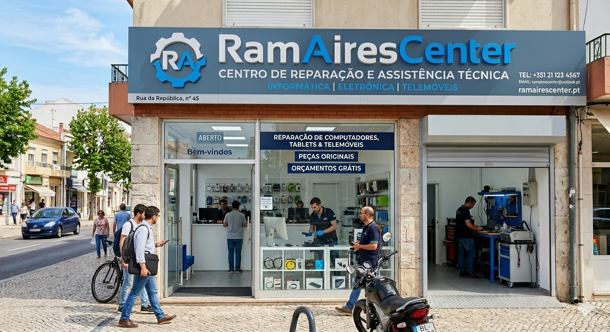

Sobre a RamAiresCenter
Somos uma loja de assistência técnica em Vila Franca de Xira, fundada com o objetivo de oferecer reparações rápidas, honestas e acessíveis a toda a comunidade. Conheça-nos melhor.
A nossa história
De uma ideia partilhada à loja de referência na região.
A RamAiresCenter nasceu da paixão de dois amigos por tecnologia e pela vontade de criar um serviço de reparação diferente — sem letras miúdas, sem surpresas no orçamento e com respeito pelo tempo do cliente.
Ao longo dos anos acumulámos mais de 10 000 equipamentos analisados, desde portáteis a consolas, passando por telemóveis e impressoras. Cada reparação é tratada como se fosse o nosso próprio equipamento.
Hoje operamos em loja física em Vila Franca de Xira e respondemos também a pedidos por telefone, sempre com diagnóstico gratuito e orçamento sem compromisso.

A nossa missão
Devolver vida aos equipamentos dos nossos clientes com transparência, competência e o menor prazo possível — sem complicações e sem custos escondidos.